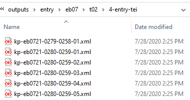
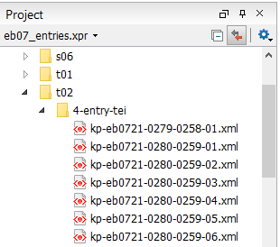

Validate Entry Files
Use Oxygen to validate the entry files.
-
In Oxygen XML Editor, navigate to the
outputs/entry folder for the edition you are working on and
open an existing xml-project file, if
one exists.
- Alternately, create a new one by selecting .
Figure 1. The xml section folder  -
In the Oxygen Project
window, select a batch of files.
Figure 2. The project window  -
Right-click the selection. At the bottom of the pop-up menu, select .
You should receive a Validation successful message.If some files do not validate, a red box and a Validation failed message appear in the blue bar at the bottom of the window. An Errors window opens at the bottom listing specific problems. These are almost always issues with
</p>before a<pb>. Correct any remaining problems manually.Figure 3. Errors window and the Validation failed message - Mark the batch as valid with a date in the entry-inventory.